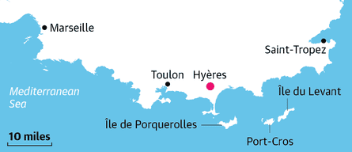
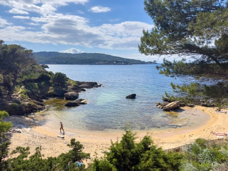
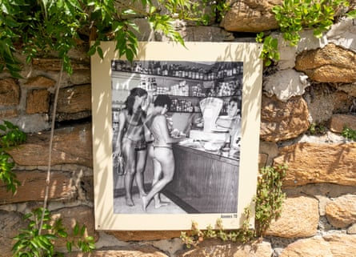
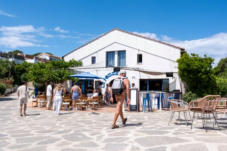
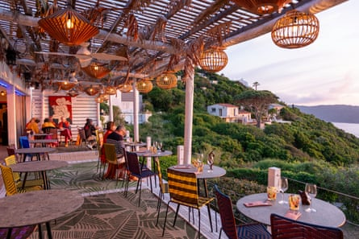

T he trail hugs every curve of the cliffside. On my left, the Mediterranean Sea swirls beside craggy rocks, while flowering plants unfurl on my right. A quarter of France’s coast is lined with similar sentiers des douaniers (customs officers’ paths), which were once used to patrol the sea. The difference on this trail is that I’m wearing nothing but my backpack.
Off the coast of the southern French resort town of Hyères, Île du Levant is home to the only naturist community of its kind, the Domaine Naturiste d’Héliopolis . For 93 years, this rustic Eden has lured free-spirited lovers of nature and authenticity, as unabashedly naked as Adam and Eve before they ate the forbidden fruit. On every visit, I’ve found that when people shed their clothes, they shed their pretence. Unlike traditional naturist retreats where nudity is de rigueur, Héliopolis is peppered with clothing-optional spots. This makes it the ideal place for travellers to dip their toes into the naturist way of life.
I first came to Île du Levant with my twin sister when I was 20. We had grown up in a home that was comfortable with nudity, yet a clothes-free island was unfamiliar territory. Disrobing on the hiking trail, it seemed as if we were breaking the rules. And when a pleasure boat came close to us, we felt as exposed as the rocks below. The sun soon melted our inhibitions, however. It was exhilarating to be nude in nature, each sense amplified as if our clothing had been stifling them.
We instantly befriended a British couple, the awkwardness of chatting to strangers cast away with our clothes. When I returned to Héliopolis 26 years later, after moving to nearby Marseille, I was just as enchanted by its bare-it-all bonhomie, and felt worry-free as a solo female. I have returned every year since.
Plage des Grottes, Héliopolis’s only sandy beach.Photograph: Alexis Steinman
The Fédération Française de Naturisme defines naturism as: “A manner of living in harmony with nature, characterised by the practice of communal nudity, which consequently fosters respect for oneself, others and the environment.” The seeds were planted in late 19th‑century Germany as a social-health movement in response to dehumanising industrialisation. While certain aspects such as alfresco gymnastics and abstention from alcohol have disappeared, the crux of the philosophy – that gathering au naturel in sun-kissed nature does the body and mind good – is still its raison d’etre.
One of the more unusual side‑effects of the back-to-nature trend that took hold during the Covid pandemic has been a surge in popularity of naturism in the UK , with an Ipsos poll in 2022 showing that one in seven Britons (6.75 million people) had practised it, up from 3.7 million in 2011.
There is also an increased interest among young adults. A symbol of body positivity and eco-consciousness, naturism is also “a break from the noise of the news, consumerism and other concerns that weigh on our generation”, says Naomi Gergaud, a 30-year-old fourth-generation Levantine, whose grandparents used to say: “We weren’t born in knickers.”
The UK’s cool climate is not ideal for being in your birthday suit, however, so many Britons join northern Europeans in sunny southern France. The country is the world’s leading naturist destination , welcoming 2.6 million visitors a year at naturist clubs, beaches or campsites. Or on an island, as in Héliopolis’s case – though not an entire one, as 90% of Île du Levant is occupied by the French military. Over the centuries, everyone from Barbary pirates to Benedictine monks settled on the isle for its strategic, remote location.
A vintage photograph is testament to the island’s history of naturism.Photograph: Alexis Steinman
The French natural medicine doctors Gaston and André Durville put down roots on Île du Levant in 1932, fresh from founding a naturist camp called Physiopolis on Platais island in the Seine. The brothers named their Mediterranean settlement Héliopolis, after the ancient Greeks’ belief in the therapeutic properties of the sun ( helios ). Almost a century later, Héliopolis is a trip back to those simpler times, despite being just five nautical miles from the shore.
I board a passenger boat – fittingly called Amour des Îles (love of the islands) – in Hyères. As waves splash me in a salt-water mist, the 90-minute journey across the Mediterranean sets the scene for a great escape, especially when the captain takes a detour to an out-of-this-world rock formation, Cap des Mèdes, because “the light is too beautiful”. There is no rush since Île du Levant moves at its own pace.
That is partly because no cars are allowed on the island, save for a taxi to ferry people from the port to their accommodation. Héliopolis has a small footprint of just 65 hectares (160 acres) and about 90 year-round residents. Besides, walking aids wellbeing, especially since it is on such a steep slope. A local tells me it takes three days for your legs to adjust. So pack lightly, which is easy when you will mostly be sporting a sarong. But don’t forget a torch – though electricity arrived in 1989, there aren’t any streetlights – which adds to the yesteryear charm.
La Pomme d’Adam cafe/restaurant, the resort’s social hub.Photograph: Alexis Steinman
After dropping my bag at Soléa Lodges, a trio of lovely studios overlooking the sea, I head off on an amble along eucalyptus-scented roads that weave past phone-booth libraries and dreamily named homes like La Recluserie (secluded hideaway). I find it easy to navigate using the wooden street signs, which have adages in French such as “ Être nu rendre heureux” (being naked makes you happy). That is surely the case when a leathery woman clad in just a lavender bumbag and matching flip-flops greets me with an ebullient “ Bonjour ”. Saying hello is one of the isle’s rules – reminders are posted on graphic signs about town. Others are to conserve water, a precious resource here, and to sit on a sarong in restaurants.
All roads lead to the Place Durville that tops Héliopolis. The cafe/restaurant La Pomme d’Adam has been the resort’s social hub since 1932. “I came to holiday here and never left,” says my waiter. Holidaymakers pick up nude-themed collectibles at L’Érotique Traversée des Siècles and hefty slices of quiche for picnics at Boulangerie Pâtisserie la Grigne . Full nudity is forbidden in shops (Levantines don thong-like minimums to skirt this rule). This is because Hyères’s town council has a presence in Héliopolis, helming the itty-bitty town hall, post office and police station. The full-time islanders manage everything else with their local union. Hence, the quirk of Héliopolis being a “private domain that is open to the public”.
Nudism keeps tourism at bay compared with the busier Îles d’Or (Golden Isles) such as Île de Porquerolles, which attracts four times as many visitors as Île du Levant in high season. I have only visited in spring and autumn, which are the best times to savour the silence with the locals.
The restaurant at the island’s HéliOtel.Photograph: Alexis Steinman
A third of Héliopolis is covered by the Domaine des Arbousiers, a nature reserve that sprawls between a dense maquis and the wind-battered coastline. The strawberry-tree-lined Sentier du Point du Jour leads to the highest point, where I’m rewarded with a panorama of the surprisingly pretty military base (early birds should come for sunrise). Heading back to the Mediterranean, the precipitous Sentier des Moines path zigzags through a fragrant pine forest to the Sentier du Bord de Mer.
This seaside trail is best traversed in the buff. With my skin deliciously warmed by the sun and refreshed by the breeze, I feel as free as the squawking seagulls gliding the thermals above me. Each step affirms the “naturism is liberty” axiom that Levantines preach. A dip beckons at Bain de Diane, where concrete platforms scattered between rocks are topped with sunbathers. Their naked bodies are as much a part of the landscape as the lizards that scurry beside them, recalling writer Sophie Fontanel’s poetic novel La Capitale de la Douceur : “It’s hard to believe that we look so much alike when we’re undressed. We’re all the same ideogram.”
Past the port, Plage des Grottes is Héliopolis’s only sandy beach. The gorgeous turquoise cove has always been adamantly nude. “Locals once used mirrors to deflect sunbeams into the eyes of textiles [clothed people] to steer them away,” says septuagenarian Frédéric Capoulade, the island’s historian.
People can often be less social at traditional nude beaches. “As a naturist community, we don’t have the same barriers here,” says Fred Godeau, who owns the hip HéliOtel with his partner, Julie (their restaurant serves up a stellar panorama). Fred’s words echo the Durville brothers’ belief that clothes represent the social class to which an individual belongs. Everyone is on an equal footing wearing just a smile.
The ferry goes from Hyères ( 90 mins , €29 return , tlv-tvm.com ) and Lavandou ( 35-60 mins , €34 return, ot-lelavandou.fr ). Accommodation at Soléa Lodges ( open year-round, iledulevant.com.fr ) starts at €80 a night for a studio sleeping three. Héli Otel (open May-September, heliotel.net ) has doubles from €150 B&B